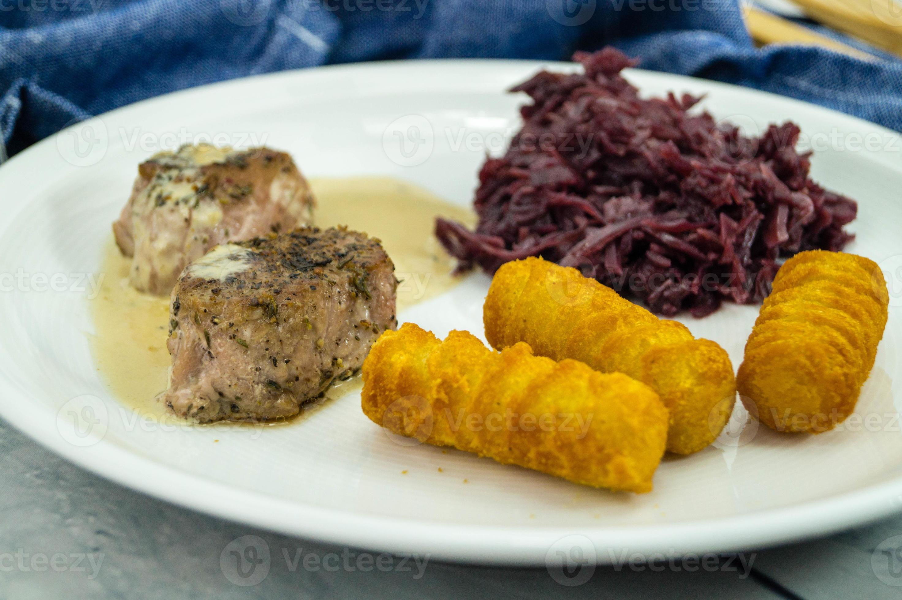

Joels Vitlöksfläskfile
Tillbaks till lista

Ingredienser till 4 personer
- 500g flaskfile
- 800g pöötatis kroketter
- 3st matskedar rårörda lingon
- 2st stora champinjoner
- 4st solo vitlökar
- 3dl matlagningsgrädde
Instruktioner
- Starta ugnen på 200c varmluft, Airfryer funkar också bra
- Skiva fläskfilen i drygt 2cm tjocka skivor
- Hacka eller skiva vitlöken till små bitar
- Skär ned svampen till små bitar
- Stek fläskfilen samt svampen och vitlöken på medelhög värme tills den fått fin färg samt salta efter smak
- Hiva ned grädden
- Sätt in kroketterna i ugnen eller ned i airfryern
- Sänk värmen på plattan och låt det puttra tills grädden fått den konsistens du föredrar
- Kolla kroketterna med jämna mellanrum och ta ut dem när de har fått gyllenbrun färg
- När du tycker att grädden närmar sig rätt konsistens så häll de rårörda lingonen
- Nu kan du smaka av såsen i pannan och ha i mer salt eller om du vill soja efter smak
Tillbaks till lista